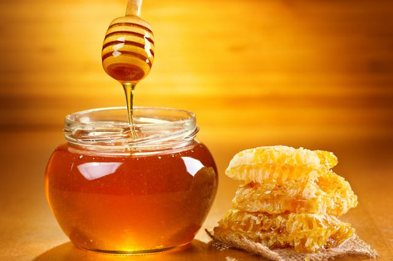

Продажа мёда населению
Мёд-сладкий вязкий продукт, который вырабатывают пчёлы и родственные насекомые. Пчелиный мёд представляет собой частично переваренный в зобе медоносной пчелы нектар либо сахаристые выделения некоторых растений или некоторых питающихся соками растений насекомых.

По происхождению натуральный мёд может быть цветочный и падевый. Цветочный мёд производится пчёлами в процессе сбора и переработки нектара, выделяемого нектарниками цветковых растений. Падевый мёд пчёлы вырабатывают, собирая падь (сладкие выделения тли и некоторых других насекомых) и медвяную росу с листьев или стеблей растений. Падевый мёд содержит повышенное количество минеральных веществ, поэтому его не оставляют для зимовки пчёл: повышенное количество неперевариваемых веществ ведёт к переполнению кишечника пчёл, поносу и ослаблению, вплоть до гибели семей.
Стоимость нашего мёда
| Вид | Цена | Наличие |
|---|---|---|
| Липковый | 20$ за литр | 10 тонн |
| Сосновый | 30$ за литр | 7 тонн |
| Клеверный | 40$ за литр | 5 тонн |
| Одуванчиковый | 50$ за литр | 1 тонна |
Мёд- лучшее лекарство!
Согласно данным Национального института здоровья США, мёд может быть эффективен при лечении ожогов, ран, кашля, диабета, мукозита. Мёд имеет подтверждённые противомикробные (антибактериальные, антимикотические, антимикобактериальные) свойства, интерес к которым в последнее время растёт.
Покупайте наш мёд

На пасеках в течение сезона получают обычно несколько сортов мёда, например в начале взятка — белоклеверный, а в конце его — липовый, гречишный, подсолнечниковый. Эти сорта мёда следует сливать в разную тару, не смешивая. Для получения мёда желательного цвета, аромата и консистенции, а иногда и того, и другого вместе, на крупных заготовительных пунктах, подготавливающих к продаже большие партии мёда, производят так называемое купажирование мёда, то есть смешивание его отдельных сортов.